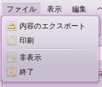
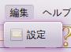
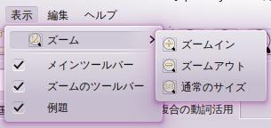
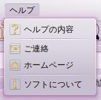
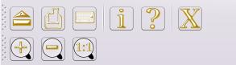
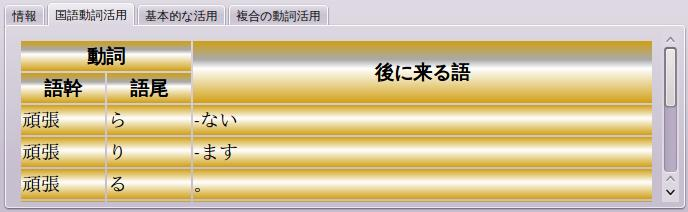
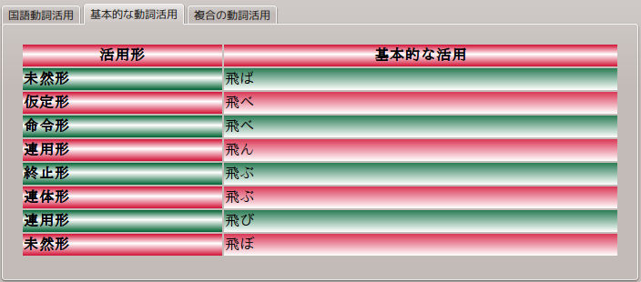
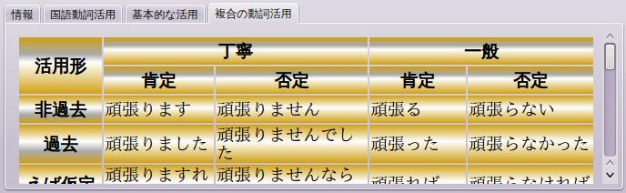

このアプリケーションは、簡単に使用するユーザインタフェースをあげます。 簡単な方法で日本語の動詞を活用するために、そして、動詞のことでユーザーを手伝うために、このアプリケーションはあります。 アプリケーションには5つの部分が含まれています：
アラビア語、フランス語、英語：また、ユーザーインターフェイスは日本語以外の言語に翻訳されている。
それは、印刷または結果表をエクスポートなどのデータの機能を含まれています。

それは、設定などの編集機能を含まれています。

それは、ズームまたはバーやパネルを示すことなどのアプリケーションのプレゼンテーションの機能を含まれています。

それは、このヘルプとアプリケーションに関する情報を含まれています。

ツール·バーは、メニューバーにある機能に簡単にアクセスするために使用される。

ここで、活用したい日本語の動詞を入れられます。 入力動詞はある条件を達成しなければならない：
アプリケーションを使用すると、入力された動詞についての情報をあげます。
動詞がデータベースに存在しない場合は、メッセージが表示されます。
そうでなければ、動詞の種類を示しています。
次は動詞の最も重要な種類のリストです。
結果は3つのテーブルが含まれています。
動詞活用を学ぶために日本人がそれを使用します。

それは、「a、e、u、i、o、t」の基本的な形を示しています。

これは、基本的な動詞活用と接尾語を使用して複雑な形を示しています。
